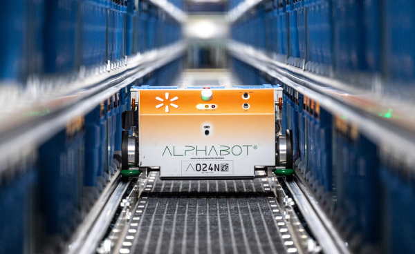
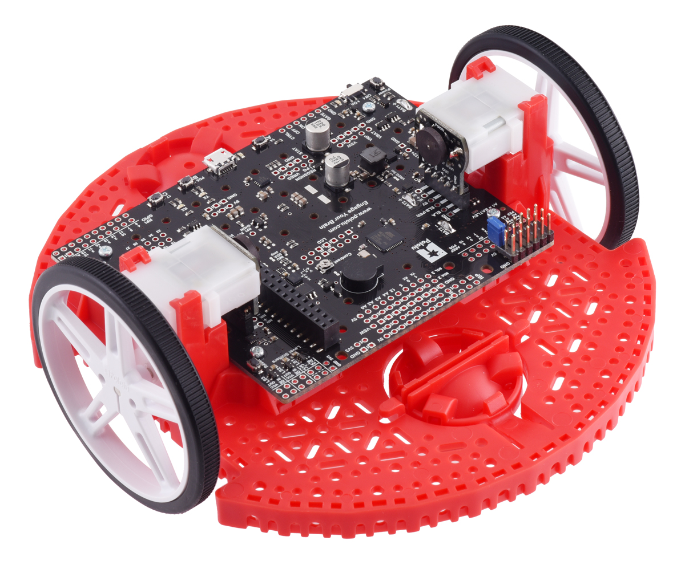
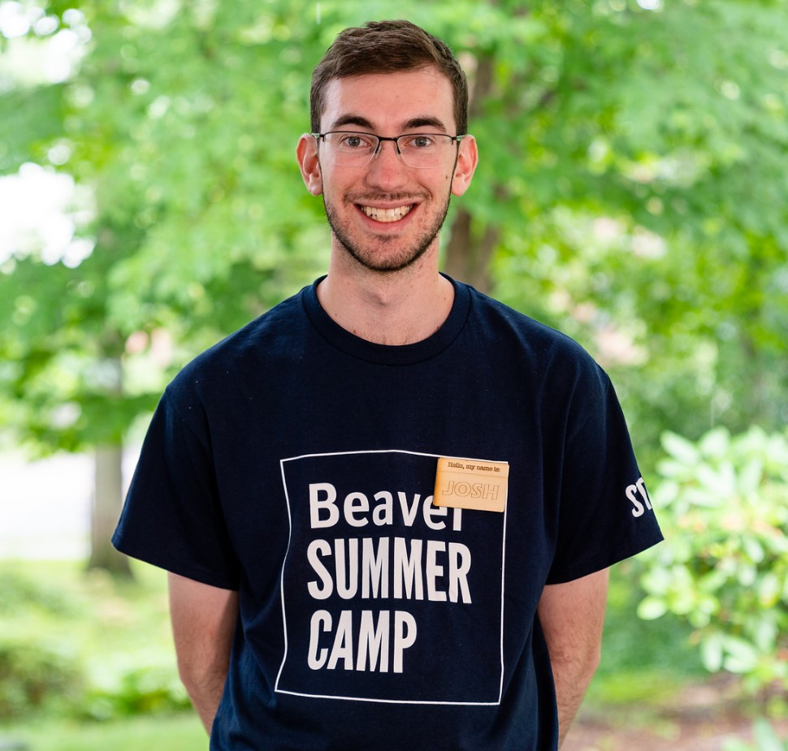

Work
Junior Automation Engineer
May 2024 - August 2024
While at Walmart, I worked as a member of the Networks Operations Center (NOC) team addressing faults within the live Alphabot system. This involved both mechanical failures within individual bots and structural components as well as software bugs in the embedded code and central control system. In my role, I used MATLAB to develop an interface for reading and plotting log data related to robot faults, using both custom plots created by individual NOC members and stored sets of plots based on common failure modes. Designing this app was an iterative process involving collaboration within my own team to get feedback from users, as well as communication with the larger Walmart ASR team to ensure all users needs were met.
After completion of this initial project I also completed two follow-up tasks. First, I rebuilt the app from its initial Linux-only version to accomodate Mac and Windows systems, allowing for greater flexibility and opening up additional opportunities for use by engineers outside the NOC team. Second, I designed a brand-new software package to automatically analyze failure logs for likely fault types, identify the relevant plots and data, and display these plots. This system allows experienced users to quickly triage simple cases, as well as allows inexperienced analysts a simple and quick way to process faults without needing knowledge of the entire application. Finally, I created in-depth documentation for installing and using all the software I worked on throughout the summer, as well as notes on how to identify and fix potential bugs as well as areas for likely future development.
Throughout this internship, I grew as an engineer, particularly as a software develop and UI/UX designer. I also learned new perspectives on identifying possible fault-points within robotic systems and how to triage and address these failures. Finally, I got the opportunity to work with and learn from a great group of engineers, who helped develop my skills in both verbal and visual communication.
Peer Learning Assistant
August 2023 - Present
I am a student assistant at WPI helping teach Sophomore-level robotics engineering classes. The first class covers mechanical actuation and design, and the second class covers sensor integration and control systems. Both involve general topics such as the overall design process; how robots utilize sensors such as encoders to determine state; and how to develop effective, well-formatted, and well-documented code.
To be effective as a teacher and mentor, I needed a firm grasp of concepts from mechanical, electrical, and computer engineering, as well as computer science. For mechanical engineering, concepts I helped cover involved analysis of static and dynamic systems, overall mechanical design, stress analysis, and Solidworks usage. For electrical engineering, I covered topics including interrupts, wiring and pin assignment, equipment usage (power supplies, oscilloscopes, multimeters, soldering irons), and serial bus communication. With computer engineering and science, I helped students design code that was effective and followed best-practices, including OOP and state-machine concepts; I also served as a scrum manager and sponsor for multiple project teams. Languages taught included Java, C++, and MATLAB.
Community Advisor
August 2022 - December 2022
As a Community Advisor at WPI, I led a group of thirty first-year students through orientation and providing support throughout their first semester. This involved leading them through programming developed by WPI to introduce them to college life, as well as designing my own events and programming to ensure that they had the tools needed for success during the transition to college. These ranged from discussions of appropriate and safe conduct on campus and at parties to presentations about how to find housing for sophomore year to group dodge-ball tournaments and movie nights. I also conducted one-on-one and group check-ins to provide quick and accessible answers to any questions or issues students were experiencing.
Throughout this process, I worked with a team of fellow Community Advisors to develop large-scale events for the entire incoming class, as well as figure out areas where the overall new student experience could be improved to best support the WPI student body.
Woodshop Specialist and General Counselor
June 2019 - August 2023
I spent two summers as a general counselor and two summers as a woodshop instructor at Beaver Summer Camp. As a general counselor, I worked as part of a team of three to manage 25-30 six-year-olds throughout their day. This involved safely transporting them between activities, managing conflicts, and creating fun games and events for the group. As a woodshop specialist, I worked to ensure a safe environment within the woodshop, for both campers and counselors, and helped train counselors on safe and proper usage of woodworking equipment. I also helped develop and prepare creative woodworking projects for campers across a wide range of ages and experience levels.